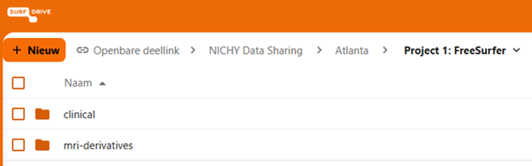
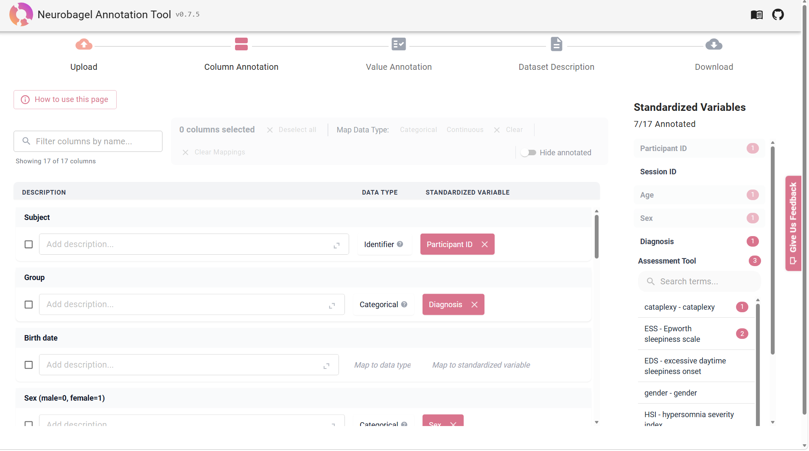
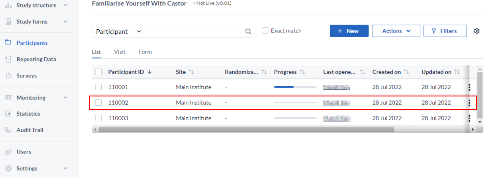

Data Sharing for NICHY FreeSurfer 7
Important things to consider
Once you have completed all the steps, your derived data is ready to be shared with the server in Amsterdam, where it will be accessible to the NICHY core team and project leads (following opt-in). All data will remain on this server. Before transferring, please take the following steps:
- Review the .tsv and Excel files to confirm completeness. Verify that all participants are included, there are no missing or unexpected values, and that quality assessment scores have been assigned to each ROI and participant.
- If your site has a preferred data transfer method (different from the one described below), please let us know and we will do our best to accommodate it. Be sure to confirm this with your PI and consult your data transfer agreement beforehand.
Data upload via SURFdrive
We provide a secure and encrypted method to send your data using SURFdrive, SURF's community cloud storage service for Dutch education and research.
Using the personalized link you received via email, please upload your derived MRI data and (depending on the clinical data option you selected above) the corresponding clinical data. Once uploaded, we will securely transfer the data to our servers for statistical analysis.

Data to be shared
The following data will be shared with the Amsterdam server as part of this project:
MRI Outcomes (nipoppy workflow)
FreeSurfer output (5 spreadsheets)
From: <dataset_root>/derivatives/freesurfer/7.3.2/idp/fs_stats-0.2.1/
-
Surface area:
fs7.3.2-aparc-area.tsv -
Thickness:
fs7.3.2-aparc-thickness.tsv -
Curvature:
fs7.3.2-aparc-meancurv.tsv -
Subcortical volume:
fs7.3.2-aseg-volume.tsv
From: <dataset_root>/derivatives/freesurfer_subseg/1.0/idp/fs_subseg_stats-0.2/
- Subsegmentations:
subsegmentation_volumes.tsv
Quality control output (2 spreadsheet, optionally .png files)
-
Cortical quality assessment scores
-
Subcortical quality assessment scores
-
Quality control .png files (if authorized)
Clinical and Demographic Data
Please share all available clinical and demographic data using one of the following three options. It is important for us to receive as comprehensive a dataset as possible so we can identify which variables are available across NICHY sites and conduct analyses with maximum clinical detail.
Our general recommendation is to share all available data. If you want some guidance on what variables we are interested in, please check out our NICHY variable list.
Option 1: Sharing an existing spreadsheet (recommended)
If your site already has a spreadsheet containing the clinical and demographic variables for all participants, you can share this directly as a single TSV (tab-separated values) file, with all variables as columns and all participants as rows. Avoid Excel files with multiple tabs, merged cells, or comments, as these are difficult to parse and combine across sites.
For this option, we ask you to create a data dictionary using Neurobagel. A data dictionary is a structured file that documents what each variable in your spreadsheet means and how the values are coded. Convert your spreadsheet to a TSV format and name your spreadsheet as follows: NICHY_[YourSiteName]_clinicaldata.tsv (for example: NICHY_Amsterdam_clinicaldata.tsv).
Then, follow the detailed instructions on our Neurobagel data annotation page.

What to upload?
Upload the clinical data spreadsheet, the data dictionary (..._annotated.json), and dataset description (..._dataset_description.json) to the SURFdrive folder for your site.
Option 2: Manual entry via Castor (prospective sites or small N)
If your site is just getting started or has a relatively small number of participants, you can enter your data directly into Castor, a clinical data management platform. Only you, the NICHY core team and approved project leads will have access to your participants' data. More information about data entry using Castor can be found here. If you want to proceed with this option, please send us an email and we will provide you with access and instructions. No data dictionary is needed for this option.

What to upload?
The clinical data sharing will go through Castor, you do not need to upload any clinical data to the SURFdrive folder for your site.
Option 3: EU-NN data sharing
If your participants are also included in the EU-NN database, you can request an export of the relevant data directly from the EU-NN. We also require a reference file with matching MRI IDs, as well as some more data that is not included in the EU-NN. Please reach out to the NICHY core team to arrange this.
What to upload?
Upload the EU-NN export and the reference file to the SURFdrive folder for your site. For the additional requested clinical data that is not included in the EU-NN, share these using either Option 1 (spreadsheet format) or Option 2 (Castor entry). Include the corresponding data dictionary and dataset description if you choose the spreadsheet route.